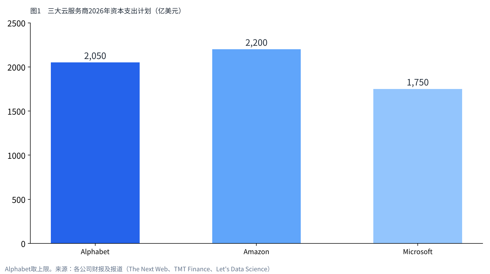
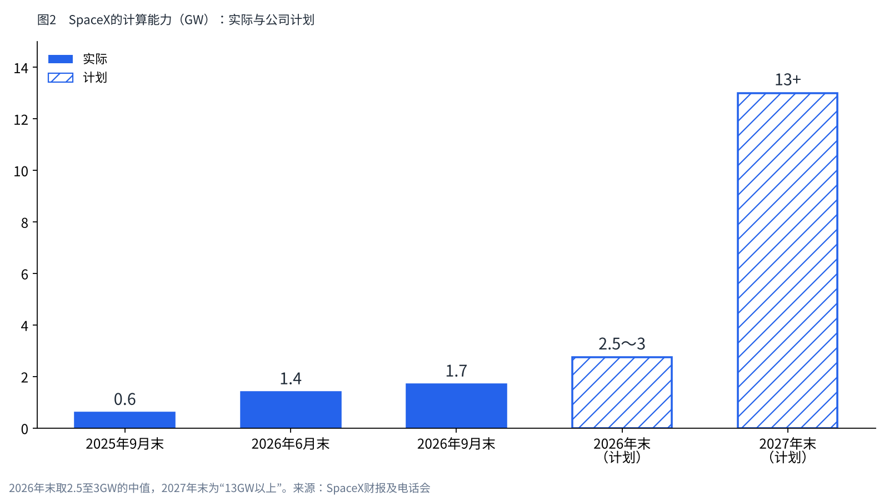

航天企业变成AI云：把计算资源租给竞争对手的生意
一家火箭公司，开始靠出租AI计算资源赚钱。而租用者，同时也是它在AI上的竞争对手。
身在东京的我，用一手资料的数字，把计算资源的短缺、出租GPU的损益、在太空中计算的构想排列出来。
我持有SpaceX的股票。在这里，我想确认这家公司到底在哪里赚钱。

计算资源为什么不够
AI的训练和推理，需要大量的GPU和电力。大型云服务商为了确保这些资源，正在投入前所未有的金额。Alphabet把2026年的资本支出计划上调至最高2,050亿美元。Amazon预计约2,200亿美元，Microsoft约1,750亿美元。
即便如此，仍然不够。Amazon的贾西CEO表示，2026年的需求无法全部满足，2027年也会是同样的情况。Alphabet则说明，在自家设施投入运转之前，会靠向其他公司租用的容量来应对。
电力也是一道墙。国际能源署（IEA）预计，数据中心的电力需求到2030年将达到约945TWh，约为现在的2倍。仅看为AI优化的设施，需求将增长到4倍以上。
计算资源建设需要时间，想用的人又多。所以，由拥有者出租计算资源的生意就能成立。

出租GPU这门生意的损益
以出租GPU为主业的云服务商，被称为“新型云（neocloud）”。代表性的CoreWeave，在2026年4至6月实现营收25.75亿美元，比上年同期增长112%。
调整后EBITDA为15.10亿美元，利润率达到59%。然而净损益却是6.26亿美元的亏损。利息支出6.40亿美元，资本支出64.22亿美元，折旧和利息吃掉了利润。
CoreWeave的赚钱方式，以多年期的承诺合同为支柱。这是一种不用也要付钱的“照付不议（take-or-pay）”合同，加权平均期限约5年。它以这些合同为担保借款，再去买GPU。2025年的营收中，约67%来自Microsoft一家。
也就是说，出租GPU的生意在现金流入上赚得很多。另一方面，借钱买来的设备之重，压低了最终的利润。
| 项目 | CoreWeave（2026年4至6月） | SpaceX AI部门（2026年7至9月） |
|---|---|---|
| 营收 | 25.75亿美元 | 75.60亿美元 |
| 调整后EBITDA | 15.10亿美元（59%） | 49.53亿美元（约66%） |
| 资本支出 | 64.22亿美元 | 164.44亿美元 |
| 计算能力 | 运行中1.5GW，已签约约3.7GW | 1.7GW（计划年底2.5至3GW） |
| 合同形式 | 约5年的承诺合同 | 接近现货价格，可提前90天通知解约 |
| 资金来源 | 以合同为担保的借款 | 手头现金及有价证券898.55亿美元 |
SpaceX的出租方式有何不同
SpaceX的AI部门在7至9月实现营收75.60亿美元。调整后EBITDA为49.53亿美元，利润率与CoreWeave一样处于高水平。
大的租用者有2家。Anthropic到2029年5月为止每月支付12.5亿美元。Google从2026年10月到2029年6月，每月支付9.2亿美元。两家合计，计算资源的营收规模约为每年260亿美元。
与CoreWeave不同的是合同的形式。SpaceX在财报电话会上说明，出租并非长期固定价格，而是“接近现货价格”。据称每次续约，每瓦电力的单价都在上涨。与Anthropic和Google的合同，也可以提前90天通知解约。
自用部分和对外出租部分“大约各占一半”，可以在60比40之间调整。公司表示，按现在的价格，新建的计算基础设施不到1年就能收回投资。
资金来源也不同。截至9月末，SpaceX持有现金及有价证券898.55亿美元。CoreWeave是借钱买设备、靠长期合同偿还，而SpaceX是用手头资金建设、按市场价格出租。

向竞争对手收费的格局
SpaceX有自家的AI——Grok。Anthropic和Google也都是做AI模型的公司。也就是说，SpaceX把计算资源租给在AI上竞争的对手，并收取费用。
租用者一方也有自己的情况。据WSJ报道的Anthropic上市申请草案，已确定的云服务合同约为4,500亿美元。其中Google Cloud为1,110亿美元，AWS为1,100亿美元，Microsoft为310亿美元。包括谈判中的合同，最多可达7,500亿美元。
TechCrunch报道称，大型云服务商已开始把Anthropic视为竞争对手，在提供容量上也很吃力。掌握计算资源的公司，正开始左右AI竞争的走向。
无论模型竞争中谁胜出，出租计算资源的一方都能收到费用。格局就是这样形成的。
在太空中计算，下一个阶段
如果地面的电力和冷却不够，就有把计算机送上太空的构想。Google在2025年11月公布了“Project Suncatcher”。在合适的轨道上，太阳能电池板的发电效率最高可达地面的8倍。设计是让81颗卫星在半径1公里的范围内编队飞行，用光通信连接。
据Google估算，如果到2030年代中期发射费用降到每公斤200美元以下，电力成本将与地面大致持平。关键在于发射的价格。
SpaceX在2026年1月向FCC申请了最多100万颗“轨道数据中心”卫星。卫星位于高度500至2,000公里，99%以上的电力来自太阳能。Anthropic也表示，有意与SpaceX共同开发数GW规模的轨道计算。
不过，这次的财报电话会并没有提到轨道数据中心。现在的营收，来自地面的计算基础设施。

数字显示的弱点
这门生意也有弱点。1至9月的资本支出为480.69亿美元，大幅超过130.97亿美元的经营现金流。Forbes的撰稿人指出，AI部门的EBITDA没有计入折旧，还写道这与1990年代末的通信泡沫相似。
以接近现货的价格出租，在价格上涨阶段很有优势。但如果计算资源过剩，单价就会下降。可提前90天通知解约的合同，也意味着租用者一旦拥有自己的容量，就可能离开。
公司提出计划，到2027年末把计算能力扩大到13GW以上。需求能否跟上这个速度，将决定这项业务的成败。
我是这样看的
我持有SpaceX 1,250股。买入时，我以为它是一家火箭公司。把现在的数字排开来看，它作为出租计算资源的公司的一面，已经变得很大。
我认为，最终赢的会是SpaceX。因为它在向竞争对手收费。无论AI模型的竞争中哪家胜出，只要还在租用计算资源，SpaceX就有收入。
从经营共享办公的立场来看，这种形式也很好理解。不管租给谁，都是出租一方的生意。我觉得重要的是，自己的业务里能不能留下利润。
弱点在于资本支出之重，以及现货价格的波动。我不去猜股价。每次财报，我都会确认计算能力是否按计划增长、出租单价是否保持住。
来源
- SpaceX 2026年第三季度财报 https://s21.q4cdn.com/184289198/files/content_files/SpaceX-Reports-Third-Quarter-2026-Results.pdf
- SpaceX财报电话会文字记录（Benzinga） https://www.benzinga.com/news/26/10/62484605/spacex-q3-2026-earnings-call-transcript
- CoreWeave 2026年第二季度财报 https://investors.coreweave.com/news/news-details/2026/CoreWeave-Reports-Strong-Second-Quarter-2026-Results/default.aspx
- CoreWeave 2025财年年报（10-K） https://www.sec.gov/Archives/edgar/data/1769628/000176962826000104/crwv-20251231.htm
- IEA《Energy and AI》 https://www.iea.org/news/ai-is-set-to-drive-surging-electricity-demand-from-data-centres-while-offering-the-potential-to-transform-how-the-energy-sector-works
- Google Research“Project Suncatcher” https://research.google/blog/exploring-a-space-based-scalable-ai-infrastructure-system-design/
- Anthropic“Higher limits with SpaceX” https://www.anthropic.com/news/higher-limits-spacex
- Google与SpaceX的计算资源合同（路透社，经TimesLIVE） https://www.timeslive.co.za/news/business/2026-06-06-spacex-lands-google-ai-compute-deal-after-anthropic-pact-ahead-of-ipo/
- SpaceX轨道数据中心申请（DCD） https://www.datacenterdynamics.com/en/news/spacex-files-for-million-satellite-orbital-ai-data-center-megaconstellation/
- Anthropic上市申请草案（WSJ报道，经Investing.com） https://au.investing.com/news/stock-market-news/anthropic-revenue-hits-163-billion-as-preliminary-s1-outlines-ipo-risks--wsj-4702261
- Alphabet的资本支出（The Next Web） https://thenextweb.com/news/alphabet-q2-2026-capex-205bn-cloud-82
- AWS的需求与容量（Let's Data Science） https://letsdatascience.com/news/aws-revenue-growth-outruns-available-ai-capacity-b0361d90
- 大型云服务商的资本支出（TMT Finance） https://www.tmtfinance.com/intel/2026-hyperscaler-capex-tops-us700bn-analysis
- Anthropic与各云服务商（TechCrunch） https://techcrunch.com/2026/10/20/anthropics-cloud-partnerships-are-getting-messy/
- Forbes（2026年10月20日） https://www.forbes.com/sites/jimosman/2026/10/20/spacex-earnings-crushed-estimates-but-a-35-billion-risk-remains/
照片：İsmail Enes Ayhan／NASA（Unsplash）。图表由YUKI CAPITAL制作
每天的数字与判断，记录在X上。